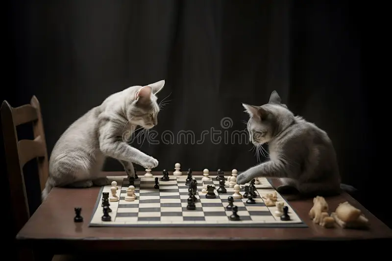
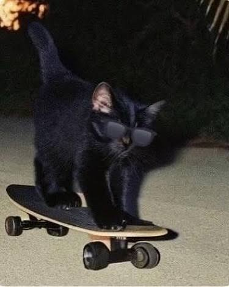
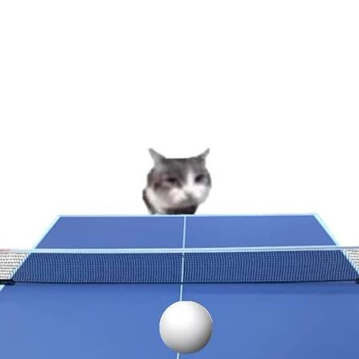

✨ Quem sou eu
Meu nome é Felipe Leonel tenho 18 anos. Nasci em Carapicuíba, morei por um tempo em Contagem - MG, e depois voltei para Carapicuíba com 9 anos. Sou estudante de Análise e Desenvolvimento de Sistemas e estou aprendendo programação, com foco principalmente em Java. Gosto de aprender coisas novas e desenvolver projetos para colocar meus conhecimentos em prática. Meu objetivo é conseguir minha primeira oportunidade na área de tecnologia, adquirir experiência e evoluir profissionalmente como desenvolvedor.
O que me motiva a estudar tecnologia é aprender constantemente e transformar ideias em soluções por meio da programação. Gosto de entender como as coisas funcionam e de enfrentar desafios que me fazem desenvolver novas habilidades. Quero continuar evoluindo e obtendo conhecimento.
🛠️ Meus conhecimentos
| Tecnologias | Nível | Experiência (meses) |
|---|---|---|
| HTML | Iniciante (aprendendo) | 2 meses |
| LUA | Básico | 2 meses |
| JAVA | Básico (aprendendo) | 7 meses |
🎮 Meus hobbies favoritos
- Tocar violão
-
Jogar Xadrez

-
Andar de Skate

- Ouvir musga
-
Jogar Tenis de Mesa

🎯 Objetivos profissionais
- Curto prazo (6 meses): Fortalecer meus conhecimentos em Java, lógica de programação e Programação Orientada a Objetos, além de desenvolver projetos práticos para criar um bom portfólio.
- Médio prazo (1-2 anos): Conseguir uma oportunidade de estágio ou emprego como desenvolvedor Java e aprofundar meus conhecimentos em Spring Boot, bancos de dados, APIs REST e testes automatizados.
- Longo prazo (3-5 anos): Me tornar um desenvolvedor Java pleno/sênior, capaz de desenvolver sistemas complexos, tomar decisões técnicas e contribuir para projetos de maior escala.